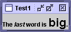

Feedback Form
|
|
Start of Tutorial > Start of Trail |
Search
Feedback Form |
1. Write the code that creates a label displaying the following text, with the italics and font size as shown in this screenshot:Check your answers. 2. Convert the
LunarPhasesexample to use radio buttons instead of a combo box.3. Add a Show Dialog check box to the
VoteDialogexample so that the dialogs are shown only if this check box is selected.
|
|
Start of Tutorial > Start of Trail |
Search
Feedback Form |